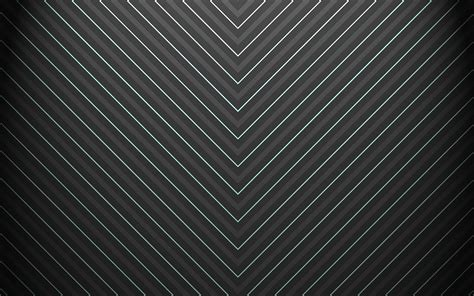
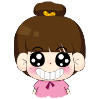

<!DOCTYPE html>
<html lang="en">

<head>
    <meta charset="UTF-8">
    <title>Css</title>
    <style>
        body {
            width: 60%;
            margin: 0 auto 150px;
            padding: 0 20px;
        }
        
        div {
            width: 120px;
            height: 120px;
            background: rgba(0, 0, 255, 0.5);
            margin: 50px;
            box-sizing: border-box;
        }
        
        .code {
            background: #eee;
            padding: 10px 0;
            margin: 10px 0;
        }
        /* 半透明边框 */
        
        .opacity-border1 {
            border: 10px solid rgba(255, 20, 147, 0.5);
        }
        
        .opacity-border2 {
            border: 10px solid rgba(255, 20, 147, 0.2);
            background-clip: padding-box;
        }
        /* 多重边框 */
        
        .more-border1 {
            box-shadow: 0 0 0 10px rgb(102, 85, 85);
        }
        
        .more-border2 {
            box-shadow: 0 0 0 10px rgb(102, 85, 85), 0 0 0 15px rgb(255, 20, 147);
        }
        
        .more-border3 {
            box-shadow: 0 0 0 10px rgb(102, 85, 85), 0 0 0 15px rgb(255, 20, 147), 0 2px 5px 15px rgba(0, 0, 0, .6);
        }
        
        .more-border4 {
            border-radius: 10px;
            box-shadow: 0 0 0 10px rgb(102, 85, 85), 0 0 0 15px rgb(255, 20, 147), 0 2px 5px 15px rgba(0, 0, 0, .6);
        }
        
        .more-border5 {
            border: 10px solid rgb(102, 85, 85);
            outline: 5px solid rgb(255, 20, 147);
        }
        
        .more-border6 {
            border: 10px solid rgb(102, 85, 85);
            outline: 1px dashed #fff;
            outline-offset: -10px;
        }
        
        .more-border7 {
            border-radius: 10px;
            border: 10px solid rgb(102, 85, 85);
            outline: 5px solid rgb(255, 20, 147);
        }
        
        .clip {
            clip-path: polygon(10% 25%, 35% 25%, 35% 0%, 65% 0%, 65% 25%, 90% 25%, 90% 50%, 65% 50%, 65% 100%, 35% 100%, 35% 50%, 10% 50%);
            animation: clip 2s ease infinite;
        }
        
        @keyframes clip {
            from {
                clip-path: polygon(10% 25%, 35% 25%, 35% 0%, 65% 0%, 65% 25%, 90% 25%, 90% 50%, 65% 50%, 65% 100%, 35% 100%, 35% 50%, 10% 50%);
            }
            to {
                clip-path: polygon(10% 0%, 35% 0%, 35% 0%, 65% 0%, 65% 0%, 90% 0%, 90% 100%, 65% 100%, 65% 100%, 35% 100%, 35% 100%, 10% 100%);
            }
        }
        /* 条纹背景 */
        
        .liner-bg {
            background: linear-gradient(#fb3, #58a);
        }
        
        .liner-bg2 {
            background: linear-gradient(#fb3 20%, #58a 80%);
        }
        
        .liner-bg3 {
            background: linear-gradient(#fb3 50%, #58a 50%);
        }
        
        .liner-bg4 {
            background: linear-gradient(#fb3 50%, #58a 0);
            background-size: 100% 15px;
        }
        
        .liner-bg5 {
            background: linear-gradient(#fb3 30%, #58a 0, #58a 60%, yellowgreen 0);
            background-size: 100% 30px;
        }
        
        .liner-bg6 {
            background: linear-gradient(45deg, #fb3 25%, #58a 0, #58a 50%, #fb3 0, #fb3 75%, #58a 0);
            background-size: 30px 30px;
        }
        
        .liner-bg7 {
            background: repeating-linear-gradient(60deg, #fb3, #fb3 15px, #58a 0, #58a 30px);
        }
        
        .liner-bg8 {
            background: #58a;
            background-image: repeating-linear-gradient(30deg, hsla(0, 0%, 100%, .1), hsla(0, 0%, 100%, .1) 15px, transparent 0, transparent 30px);
        }
        /* 复杂的背景图案 */
        /* 网格 */
        
        .bg1 {
            border: 1px solid #000;
            background: white;
            background-image: linear-gradient(90deg, rgba(200, 0, 0, .5) 50%, transparent 0), linear-gradient( rgba(200, 0, 0, .5) 50%, transparent 0);
            background-size: 30px 30px;
        }
        /* 自适应椭圆 */
        
        .radius1 {
            border-radius: 50% / 100% 100% 0 0;
        }
        
        .radius2 {
            border-radius: 100% 0 0 100% / 50%;
        }
        
        .radius3 {
            border-radius: 100% 0 0 0;
        }
        
        .radius4 {
            border-radius: 50%/50% 50% 0 0;
        }
        
        .radius5 {
            background: #fff;
            border-radius: 100% 0 0 0;
            border: 20px solid #000;
            border-style: solid;
        }
        
        .radius6 {
            background: #fff;
            border-radius: 100% 0 0 0;
            border-width: 20px;
            border-color: #000 #fff #fff #000;
            border-style: solid;
        }
        
        .radius7 {
            background: #fff;
            border-radius: 100% 0 0 0;
            border-width: 20px 0 0 0;
            border-color: #000 #fff #fff #000;
            border-style: solid;
        }
        /* 投影 */
        
        .shadow1 {
            box-shadow: 5px 5px 5px rgba(0, 0, 0, 0.9);
        }
        
        .shadow2 {
            box-shadow: 10px 10px 10px -10px rgba(0, 0, 0);
        }
        
        .shadow3 {
            box-shadow: 10px 0 5px -5px rgba(0, 0, 0), -10px 0 5px -5px rgba(0, 0, 0);
        }
        
        .shaow4-box,
        .shaow5-box {
            position: relative;
            background: #fff;
        }
        
        .shaow4-box .shadow4 {
            margin: 0;
            border-radius: 8px;
            box-shadow: 2px 2px 10px rgba(0, 0, 0, 0.5);
        }
        
        .shaow5-box .shadow5 {
            margin: 0;
            border-radius: 8px;
            filter: drop-shadow(2px 2px 10px rgba(0, 0, 0, 0.5));
        }
        
        .shaow4-box .shadow4:before,
        .shaow5-box .shadow5:before {
            content: '';
            position: absolute;
            right: -30px;
            top: 20px;
            width: 0;
            height: 0;
            margin: 0;
            border: 15px solid transparent;
            border-left: 15px solid rgba(0, 0, 255, 0.5);
            z-index: -1;
        }
        /* clip-path 图形函数 */
        
        .clip1 {
            -webkit-clip-path: inset(5% 10% 5% 10% round 10%);
            clip-path: inset(5% 10% 5% 10% round 10%);
        }
        
        .clip7 {
            -webkit-clip-path: inset(5% 10% 5% 10% round 10% 100%);
            clip-path: inset(5% 10% 5% 10% round 10% 100%);
        }
        
        .clip2 {
            -webkit-clip-path: circle(50% at 50% 50%);
            clip-path: circle(50% at 50% 50%);
        }
        
        .clip3 {
            -webkit-clip-path: ellipse(47% 28% at 50% 50%);
            clip-path: ellipse(47% 28% at 50% 50%);
        }
        
        .clip4 {
            -webkit-clip-path: polygon(0 0, 100% 0, 100% 75%, 64% 75%, 66% 90%, 47% 75%, 0 75%);
            clip-path: polygon(0 0, 100% 0, 100% 75%, 64% 75%, 66% 90%, 47% 75%, 0 75%);
            box-shadow: 10px 10px 2px #000;
        }
        /* 矩形 */
        
        .clip5 {
            /* -webkit-clip-path: polygon(0 0, 100% 0, 100% 100%, 0 100%);
            clip-path: polygon(0 0, 100% 0, 100% 100%, 0 100%); */
            -webkit-clip-path: polygon(50% 0%, 65% 0%, 100% 0%, 100% 60%, 100% 100%, 50% 100%, 0% 100%, 0% 50%, 0 33%, 0% 0%);
            clip-path: polygon(50% 0%, 65% 0%, 100% 0%, 100% 60%, 100% 100%, 50% 100%, 0% 100%, 0% 50%, 0 33%, 0% 0%);
            transition: all 0.5s;
            animation: clip5 2s infinite;
        }
        
        @keyframes clip5 {
            100% {
                transform: rotate(360deg);
                -webkit-clip-path: polygon(50% 0%, 65% 33%, 100% 33%, 80% 60%, 90% 100%, 50% 75%, 10% 100%, 20% 60%, 0 33%, 35% 33%);
            }
        }
        
        .clip6 {
            -webkit-clip-path: polygon(50% 0%, 65% 33%, 100% 33%, 80% 60%, 90% 100%, 50% 75%, 10% 100%, 20% 60%, 0 33%, 35% 33%);
            clip-path: polygon(50% 0%, 65% 33%, 100% 33%, 80% 60%, 90% 100%, 50% 75%, 10% 100%, 20% 60%, 0 33%, 35% 33%);
        }
        /* 连续的图像边框 */
        
        .border-img1 {
            border: 20px solid transparent;
            background: linear-gradient(white, white), url(bg.jpg);
            background-size: cover;
            background-clip: padding-box, border-box;
        }
        
        .border-img2 {
            border: 20px solid transparent;
            background: linear-gradient(white, white) padding-box, url(bg.jpg) border-box 0 / cover;
        }
        
        .border-img3 {
            border: 20px solid transparent;
            background: linear-gradient(white, white) padding-box, repeating-linear-gradient(-45deg, red 0, red 12.5%, transparent 0, transparent 25%, #58a 0, #58a 37.5%, transparent 0, transparent 50%) 0 / 20px 20px;
        }
        
        .border-img4 {
            padding: 10px;
            border: 1px solid transparent;
            background: linear-gradient(white, white) padding-box, repeating-linear-gradient(-45deg, black 0, black 25%, white 0, white 50%) 0 / .6em .6em;
            animation: ants 12s linear infinite;
        }
        
        @keyframes ants {
            to {
                background-position: 100%
            }
        }
        /* 切角效果 */
        
        .tri1 {
            background: linear-gradient(-45deg, transparent 15px, #58a 0)
        }
        
        .tri2 {
            background: linear-gradient(-45deg, transparent 15px, #58a 0) no-repeat right, linear-gradient(45deg, transparent 15px, #58a 0) no-repeat left;
            background-size: 50% 100%;
        }
        
        .tri3 {
            background: radial-gradient(circle at top left, transparent 15px, #58a 0) top left, radial-gradient(circle at top right, transparent 15px, #58a 0) top right, radial-gradient(circle at bottom left, transparent 15px, #58a 0) bottom left, radial-gradient(circle at bottom right, transparent 15px, #58a 0) bottom right;
            background-size: 50% 50%;
            background-repeat: no-repeat;
        }
        /* 折角效果 */
        
        .tri4 {
            background: linear-gradient(-135deg, transparent 20px, #58a 0);
        }
        
        .tri5 {
            border: 1px solid #000;
            background: linear-gradient(-135deg, transparent 50%, rgba(0, 0, 0, 0.4) 0) no-repeat 100% 0 / 20px 20px;
            z-index: 1;
        }
        
        .tri6 {
            background: linear-gradient(-135deg, transparent 50%, rgba(0, 0, 0, 0.4) 0) no-repeat 100% 0 / 20px 20px, linear-gradient(-135deg, transparent 20px, #58a 0);
        }
        
        .tri7 {
            background: linear-gradient(-135deg, transparent 50%, rgba(0, 0, 0, 0.4) 0) no-repeat 100% 0 / 20px 20px, linear-gradient(-135deg, transparent 15px, #58a 0);
        }
        /* 自适应内部元素 */
        
        .img-box {
            width: 100%;
            max-width: min-content;
            height: auto;
            background: #fff;
            margin: auto;
        }
        /* 打字动画 */
        
        .print-text1 {
            width: 280px;
            animation: typing 8s;
            white-space: nowrap;
            overflow: hidden;
        }
        
        @keyframes typing {
            from {
                width: 0
            }
        }
        
        .print-text2 {
            width: 15ch;
            animation: typing 6s steps(15);
            white-space: nowrap;
            overflow: hidden;
        }
        /* 状态平滑动画 */
        
        .animation-box {
            width: 190px;
            height: 225px;
            background: url(2.jpg) no-repeat;
            background-size: 300px 225px;
            animation: animation-box 5s linear infinite alternate;
            animation-play-state: paused;
        }
        
        .animation-box:hover {
            animation-play-state: running;
        }
        
        @keyframes animation-box {
            to {
                background-position: 100% 0;
            }
        }
    </style>
</head>

<body>
    <h2>1 半透明边框</h2>
    <p>
        border: 10px solid rgba(245, 24, 24, 0.5); ???
    </p>
    <div class="opacity-border1"></div>
    <p>结果却不是我们想要的透明边框效果，这是因为 background-clip 的默认值是 border-box，延伸到了边框底下，所以，透明明框的下一层是一层背景。修改 background-clip 的值即可完美实现。</p>

    <pre class="code ">
        background-clip: padding-box; （默认值：border-box）
    </pre>
    <div class="opacity-border2 "></div>

    <h2>2 多重边框</h2>
    <h4>2.1 outline</h4>
    <p>主要用于实现两层边框。</p>
    <pre class="code">
        border: 10px solid rgb(102, 85, 85);
        outline: 5px solid rgb(255, 20, 147);
    </pre>
    <div class="more-border5"></div>
    <h5>优点1：</h5>
    <p>能占据空间，不影响布局</p>
    <h5>优点2：</h5>
    <p>样式十分灵活，可以方便的实现虚线等 border-style</p>
    <h5>优点3：</h5>
    <p>属性 outline-offset 可以接受正值和负值，实现与边框的贴合程度</p>
    <pre class="code">
        border: 10px solid rgb(102, 85, 85);
        outline: 5px solid rgb(255, 20, 147);
        outline-offset: -10px;
    </pre>
    <div class="more-border6"></div>
    <h5>缺点：</h5>
    <p>如果存在圆角，描边不能完全贴合圆角</p>
    <div class="more-border7"></div>

    <h4>2.2 box-shodow</h4>
    <p>box-shadow: 第四个参数，称作“扩张半径”，通过指定正值或者负值，可以让投影面积加大或者减小。</p>
    <p>一个正值的扩张半径加上两个零的偏移量以及零的模糊值，得到的阴影即是边框。</p>
    <pre class="code">
        box-shadow: 0 0 0 10px rgb(102, 85, 85);
    </pre>
    <div class="more-border1"></div>
    <h5>优点1：</h5>
    <p>它支持逗号分隔语法，我们可以创建任意数量的投影，即多重边框</p>
    <pre class="code ">
        box-shadow: 0 0 0 10px #655, 0 0 0 15px deeppink;
    </pre>
    <div class="more-border2"></div>
    <p>需要注意的是，box-shadow是层层叠加的，第一层投影在最顶层，依次类推，所以，需要按照此规律扩张半径</p>
    <p>除了多重边框，也可以叠加阴影</p>
    <pre class="code">
        box-shadow: 0 0 0 10px #655, 0 0 0 15px deeppink 0 2px 5px 15px rgba(0,0,0,.6);
    </pre>
    <div class="more-border3"></div>
    <h5>优点2：</h5>
    <p>他的扩张效果是根据自己的形状来的，所以，如果有圆角可以很好的实现。</p>
    <div class="more-border4"></div>
    <h5>缺点：</h5>
    <ol>
        <li>投影和边框的行为不完全一致。投影不影响布局，而且也不会受到 box-sizing 属性的影响。但是，可以通过内边距或外边距空出额外的空间来模拟边框需要占据的空间</li>
        <li>“假”边框也不影响鼠标事件。如果有需要，请设置 box-shadow:inset，来使投影绘制在元素的内圈。</li>
    </ol>

    <h2>3 投影</h2>
    <h4>3.1 单侧投影</h4>
    <p>主要是指实现相邻两边的阴影效果</p>
    <div class="shadow1"></div>
    <p>当我们的模糊半径足够大的时候，会发现，原本只想让下和右边有阴影，然而，此刻上和左也有了阴影。</p>
    <p>这时候就需要 扩张半径 ，来改变阴影的大小。当 扩张半径 == 模糊半径 的时候，阴影的大小 == 投影物体的大小。</p>
    <pre class="code">
        box-shadow: 10px 10px 10px -10px rgba(0, 0, 0);
    </pre>
    <div class="shadow2"></div>

    <h4>3.2 双侧投影</h4>
    <p>指不相邻的边的阴影效果，主要是需要用到 box-shadow 的 逗号分隔 属性</p>
    <pre class="code">
        box-shadow: 10px 0 5px -5px rgba(0, 0, 0), -10px 0 5px -5px rgba(0, 0, 0);
    </pre>
    <div class="shadow3"></div>

    <h4>3.3 不规则投影</h4>
    <p>对于伪元素、半透明的装饰...</p>
    <div class="shaow4-box">
        <div class="shadow4"></div>
    </div>
    <p>并不能很好的对伪元素等进行阴影效果</p>
    <p>滤镜：filter: blur()、opacity()、drop-shadow()、grayscale()...</p>
    <p>drop-shadow(): 滤镜可接受的参数基本上跟 box-shadow 属性是一样 的，但不包括扩张半径，不包括 inset 关键字，也不支持逗号分割的多层投影语法。</p>
    <div class="shaow5-box">
        <div class="shadow5"></div>
    </div>
    <p>完美实现？？</p>
    <div class="shaow5-box">
        <div class="shadow5">hello world</div>
    </div>
    <p>可以看出，当里面有文字的时候，文字也会被打上阴影</p>

    <h2>4 圆角</h2>
    1. border-radius: 100px / 75px; (其中 / 分隔水平和垂直半径)；</br>
    2. border-radius: 10px / 5px 20px; 等价于 border-radius: 10px 10px 10px 10px / 5px 20px 5px 20px;
    <pre class="code">
      border-radius: 50% / 100% 100% 0 0;
    </pre>
    <div class="radius1"></div>
    <pre class="code">
      border-radius: 100% 0 0 100% / 50%;
    </pre>
    <div class="radius2"></div>
    <pre class="code">
        border-radius: 100% 0 0 0;
    </pre>
    <div class="radius3"></div>
    <pre class="code">
        border-radius: 50%/50% 50% 0 0;
    </pre>
    <div class="radius4"></div>
    <p>除了 border-radius 可以接受不同方向的各个值之外，border-width 也可以接受不用方向的宽度</p>
    <p>首先画出 1/4 的圆，接着，新增一个边框10px，如下：</p>
    <pre class="code">
        background: #fff;
        border-radius: 100% 0 0 0;
        border: 20px solid #000;
        border-style: solid;
    </pre>
    <div class="radius5"></div>
    <p>接着，改变边框的颜色，只剩 圆弧的边框</p>
    <div class="radius6"></div>
    <pre class="code">
        background: #fff;
        border-radius: 100% 0 0 0;
        border-width: 20px;
        border-color: #000 #fff #fff #000;
        border-style: solid;
    </pre>
    <p>最后，修改 border-width: 20px 0 0 0; 的宽度，即可时间下面的完美效果</p>
    <div class="radius7"></div>


    <h2>5 clip-path</h2>
    <p>创建一个只有元素的部分区域可以显示的剪切区域</p>
    <h4>5.1 图形函数</h4>
    <ol>
        <li>
            inset(top right bottom left round top-radius right-radius bottom-radius left-radius): 定义一个插进的长方形
            <pre class="code">
            -webkit-clip-path: inset(5% 10% 5% 10% round 10%);
            clip-path: inset(5% 10% 5% 10% round 10%);</pre>
            <div class="clip1"></div>
            <pre class="code">
            -webkit-clip-path: inset(5% 10% 5% 10% round 10% 100%);
            clip-path: inset(5% 10% 5% 10% round 10% 100%);</pre>
            <div class="clip7"></div>
        </li>
        <li>
            circle(半径 at x y)
            <pre class="code">
            -webkit-clip-path: circle(50% at 50% 50%);
            clip-path: circle(50% at 50% 50%);</pre>
            <div class="clip2"></div>
        </li>
        <li>ellipse(): 椭圆效果
            <pre class="code">
            -webkit-clip-path: ellipse(47% 28% at 50% 50%);
            clip-path: ellipse(47% 28% at 50% 50%);</pre>
            <div class="clip3"></div>
        </li>
        <li>polygon()
            <pre class="code">
            -webkit-clip-path: polygon(0 0, 100% 0, 100% 75%, 64% 75%, 66% 90%, 47% 75%, 0 75%);
            clip-path: polygon(0 0, 100% 0, 100% 75%, 64% 75%, 66% 90%, 47% 75%, 0 75%);</pre>
            <div class="clip4"></div>
            <div class="clip6"></div>
        </li>
    </ol>
    <p>clip-path 实现动画效果</p>
    <p>当把前后两个图形的点数相同时，即可实现完美的动画变化效果</p>
    <div class="clip5"></div>


    <h2>6 灵活的背景定位</h2>
    <h4>6.1 background-position</h4>
    <pre class="code">
        background-position: right 20px bottom 10px;</pre>
    <h4>6.2 background-origin</h4>
    <p>当偏移量等于内边距时，如下，但代码不够灵活，当修改内边距时，又得修改定位</p>
    <pre class="code">
      padding: 10px;
      background: url(code-pirate.svg) no-repeat #58a;
      background-position: right 10px bottom 10px;
    </pre>
    <p>更加灵活的书写应该是：</p>
    <pre class="code">
      padding: 10px;
      background: url(code-pirate.svg) no-repeat #58a bottom right;
      background-origin: content-box;
    </pre>
    <h4>6.3 cal()</h4>
    <pre>
      background: url("code-pirate.svg") no-repeat;
      background-position: calc(100% - 20px) calc(100% - 10px);
    </pre>

    <h2>7 条纹背景</h2>
    1. background: linear-gradient(#fb3, #58a);
    <div class="liner-bg"></div>
    2. background: linear-gradient(#fb3 20%, #58a 80%);
    <div class="liner-bg2"></div>
    3. background: linear-gradient(#fb3 50%, #58a 50%);
    <div class="liner-bg3"></div>
    4. 渐变是也是一种图像，所以，任何背景图像的属性他也可以使用；加上 background-size: 100% 30px;
    <div class="liner-bg4"></div>
    5. 为了避免每次都要修改两个百分比，可以把第二个百分比置为0，则为前一个色标值的位置。例如：background: linear-gradient(#fb3 30%, #58a 0); </br>
    6. 超过三种颜色的条纹背景：background: linear-gradient(#fb3 33.3%, #58a 0, #58a 66.6%, yellowgreen 0);
    <div class="liner-bg5"></div>
    7. 有角度的渐变，只需要在新增一个角度的参数，同时重复两个渐变的色值
    <div class="liner-bg6"></div>
    8. 更方便的斜条纹，repeating-linear-gradient(),但是，在创建双色条纹时都需要用到四个色标。
    <pre class="code">background: repeating-linear-gradient(60deg, #fb3, #fb3 15px, #58a 0, #58a 30px);</pre>
    <div class="liner-bg7"></div>
    9. 对于相同颜色只是透明度不同的渐变，可以使用同一种颜色来实现。实现原理是叠加，特别适用于对渐变不支持的情况。
    <pre class="code">
        background: #58a;
        background-image: repeating-linear-gradient(30deg,
        hsla(0,0%,100%,.1),
        hsla(0,0%,100%,.1) 15px,
        transparent 0, transparent 30px);
    </pre>
    <div class="liner-bg8"></div>

    <h2>8 复杂的背景图案</h2>
    <h4>8.1 网格</h4>
    <pre class="code">
      border: 1px solid #000;
      background: white;
      background-image: linear-gradient(90deg, rgba(200, 0, 0, .5) 50%, transparent 0), 
                        linear-gradient( rgba(200, 0, 0, .5) 50%, transparent 0);
      background-size: 30px 30px;
    </pre>
    <div class="bg1"></div>

    <h2>9 连续的图像边框</h2>
    
    <p>想要利用上面的图片作为边框</p>
    <p>border-image: 实现原理是 九宫格伸缩法，把图片切割成九块，然后把他们应用到元素边框相应的边和角。</p>
    <p>最简单的做法，就是两个 div ，一个背景图片，另一个为白色背景，叠在背景图片上方。</p>
    <p>如何用一个div去实现？？</p>
    <h5>关键点：</h5>
    <ol>
        <li>实现思路：在背景图片之上，再叠加一层纯白的实色背景</li>
        <li>为了让下层的图片背景区域透过边框区域显示出来，需要给两层背景指定不同的 background-clip 值</li>
        <li>因为我们只能在多重背景的最低层设置背景色，因为只能用一道从白色渡到白色的css渐变来模拟出纯白色实色背景效果</li>
    </ol>
    <pre class="code">
        border: 20px solid transparent;
        background: linear-gradient(white, white), url(bg.jpg);
        background-size: cover;
        background-clip: padding-box, border-box;
    </pre>
    <div class="border-img1"></div>
    <p>然而，边框的图片有一种怪异的拼接效果，这是因为 background-origin: padding-box; </p>
    <p>只要修改为 background-origin: border-box</p>
    <pre class="code">
        border: 20px solid transparent;
        background: linear-gradient(white, white) padding-box, 
                    url(bg.jpg) border-box 0 / cover;
    </pre>
    <div class="border-img2"></div>
    <p>渐变图案，实现老式信封样式边框</p>
    <pre class="code">
        background: linear-gradient(white, white) padding-box, 
        repeating-linear-gradient(-45deg, red 0, red 12.5%, 
                                  transparent 0, transparent 25%, 
                                  #58a 0, #58a 37.5%, 
                                  transparent 0, transparent 50%) 0 / 20px 20px;
    </pre>
    <div class="border-img3"></div>
    <p>进一步变化：</p>
    <pre class="code">
        padding: 10px;
        border: 1px solid transparent;
        background: linear-gradient(white, white) padding-box, 
                    repeating-linear-gradient(-45deg, black 0, black 25%, white 0, white 50%) 0 / 10px 10px;
        animation: ants 12s linear infinite;
    </pre>
    <div class="border-img4"></div>

    <h2>10 切角效果</h2>
    <h5>方法1：渐变实现，单个切角</h5>
    <div class="tri1"></div>
    <h5>方法2：渐变实现，两个切角</h5>
    <p>两层渐变会填满整个元素，因此它们会相互覆盖。所以，应该使用 background-size 让每层渐变分别只占整个元素的一半面积，同时注意 no-repeat，否则背景会叠加。</p>
    <pre class="code">
        background: linear-gradient(-45deg, transparent 15px, #58a 0) no-repeat right, 
                    linear-gradient(45deg, transparent 15px, #58a 0) no-repeat left;
        background-size: 50% 100%;
    </pre>
    <div class="tri2"></div>
    <h5>弧形切角：径向渐变</h5>
    <pre class="code">
        background: radial-gradient(circle at top left, transparent 15px, #58a 0) top left, 
                    radial-gradient(circle at top right, transparent 15px, #58a 0) top right, 
                    radial-gradient(circle at bottom left, transparent 15px, #58a 0) bottom left, 
                    radial-gradient(circle at bottom right, transparent 15px, #58a 0) bottom right;
        background-size: 50% 50%;
        background-repeat: no-repeat;
    </pre>
    <div class="tri3"></div>

    <h2>11 折角效果</h2>
    <p>先实现第一层的切角效果</p>
    <div class="tri4"></div>
    <p>再实现另一层的切角效果</p>
    <div class="tri5"></div>
    <p>接着重叠起来</p>
    <div class="tri6"></div>
    <p>明明是一样的宽度，却不能完美重合。因为第二层渐变的宽度是写咋色标中的，因此它是沿着渐变轴进行度量的，是对角线尺寸。而第一层是在 background-size 中定义的长度，是背景贴片的宽度和高度，是在水平和垂直方向上进行度量的。</p>
    <p>调整尺寸之后</p>
    <div class="tri7"></div>


    <h2>12 自适应内部元素 max-width: min-content</h2>
    <p>如何让图片的描述，以图片的宽度为宽度进行自适应。</p>
    <pre class="code">
        max-width: min-content;
    </pre>
    <div class="img-box">
        
        <p>这是图片的描述文字，这是图片的描述文字，这是图片的描述文字，这是图片的描述文字</p>
    </div>

    <h2>13 精确控制表格的列和宽</h2>
    <p>只需要新增属性 tablelayout: fixed; 之后，就可以对表格进行自定义的样式定义</p>

    <h2>13 打字动画</h2>
    <p>字体出现的动画，模拟打字是一个一个出现的动画效果</p>
    <h5>通过宽度的变化，来逐个展示</h5>
    <ol>
        <li>缺点：并不适用于多行文本；并且动画持续时间越长，效果越差</li>
        <li>新增属性： white-space:nowrap;overflow: hidden;</li>
    </ol>
    <h2 class="print-text1">Css is awesome!</h2>
    <p>然而却是平滑出现，而不是我们要的单个字体的出现。而且，宽度又该如何计算呢？</p>
    <ol>
        <li>
            steps()：来实现逐帧出现，闪烁效果
        </li>
        <li>
            宽度问题，通过 ch 单位解决，表示 ‘0’ 字形的宽度。
        </li>
    </ol>
    <h2 class="print-text2">Css is awesome!</h2>

    <h2>14 状态平滑的动画</h2>
    <p>
        场景描述：当图片很长，而展示的区域有限时，我们一般只展示部分给用户看。 当其获得焦点时，图片滑动，看到其他被隐藏的部分。 然而，当用户在动画播放到一半就移开鼠标时，动画停止，并生硬的回到初始位置，这样的体验无疑是糟糕的。

    </p>
    <p>
        解决方法：结合属性 animation-play-state: paused; 来实现一开始就停止动画，当获得焦点时，可继续动画 animation-play-state: running。
    </p>
    <pre class="code">
        .animation-box {
            width: 190px;
            height: 225px;
            background: url(2.jpg) no-repeat;
            background-size: 300px 225px;
            animation: animation-box 5s linear infinite alternate;
            animation-play-state: paused;
        }
        
        .animation-box:hover {
            animation-play-state: running;
        }
        
        @keyframes animation-box {
            to {
                background-position: 100% 0;
            }
        }
    </pre>
    <div class="animation-box">
    </div>

</body>

</html>